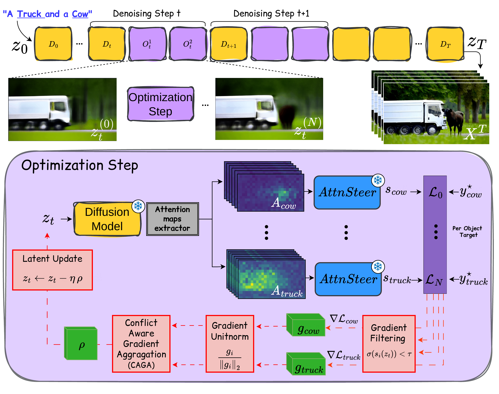
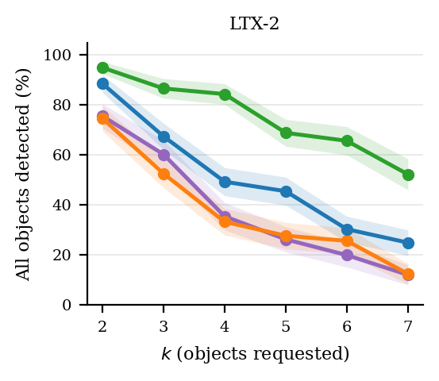
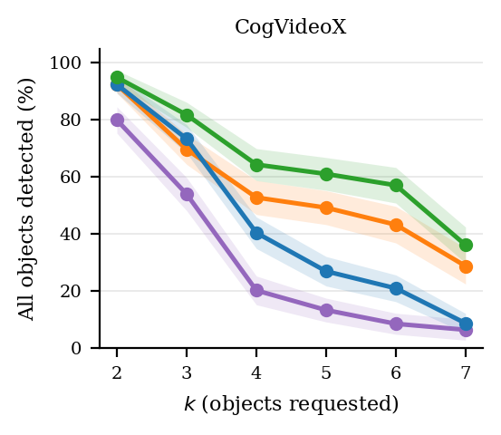
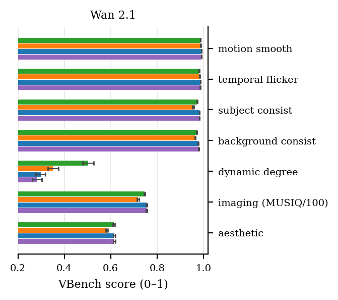
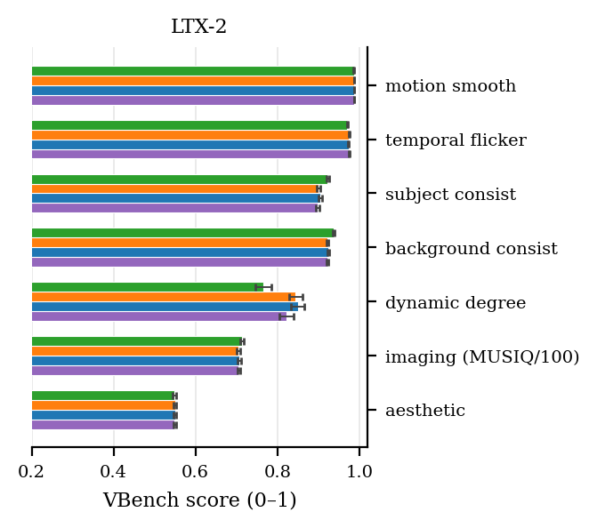
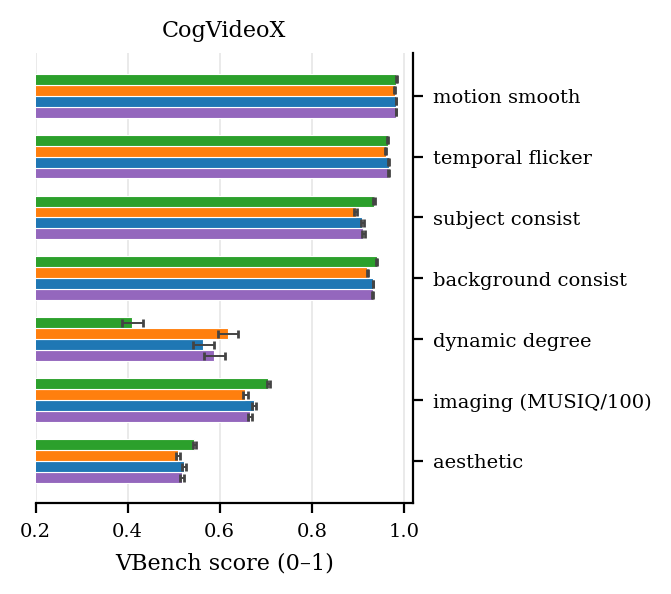
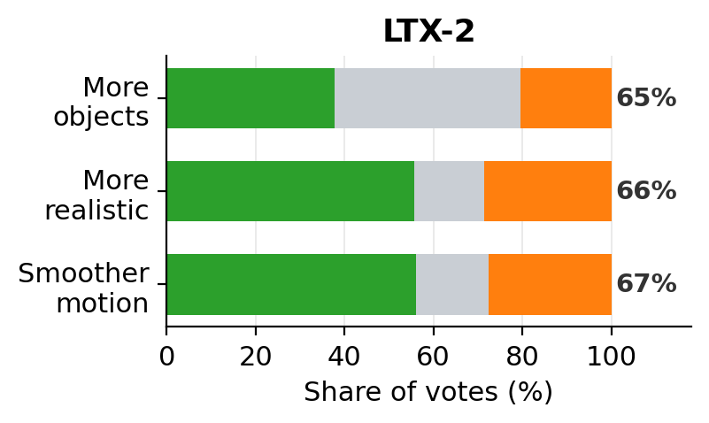
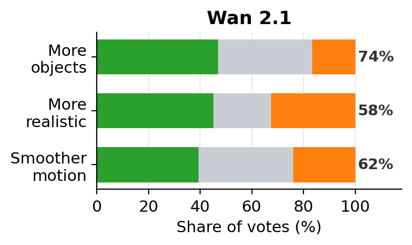

More examples (supplementary, LTX-2), GIF downloads:
- Single object: teddy bear · giraffe · remote · person · fire hydrant
- Static + dynamic: boat + airplane · teddy bear + frisbee · bicycle + car
{{ abstract_p1 }}
{{ abstract_p2 }}
LTX-2 · All-objects accuracy
61.9%
A&E → AttnSteer (ours)
Wan 2.1 · All-objects accuracy
46.5%
A&E → AttnSteer (ours)
LTX-2 · Temporal specificity
52.6%
TempoControl → AttnSteer (ours)
{{ method_inference_text }}

{{ method_training_text }}

{{ results_section_intro }}



{{ results_all_objects_caption }}
{{ vbench_intro }}



{{ vbench_caption }}
{{ results_intro }}
| Model | Params | Det. ratio (%) ↑ | All-object accuracy (%) ↑ | Quality (%) ↑ | Inference cost | |||||||||
|---|---|---|---|---|---|---|---|---|---|---|---|---|---|---|
| mean | k=2 | 3 | 4 | 5 | 6 | 7 | VBench | MUSIQ | Upd. ↓ | Time(s) ↓ | ×base ↓ | |||
| Wan 2.2 | 5 B | 78.9 | 38.3 | 87.5 | 52.5 | 35.0 | 35.0 | 7.5 | 9.6 | 84.4 | 75.4 | — | — | — |
| LTX-2.5 | 22 B | 62.1 | 17.5 | 45.0 | 16.3 | 17.5 | 11.3 | 8.7 | 5.5 | 86.9 | 73.6 | — | — | — |
| MiniMax-H3 | 33 B | 84.6 | 49.7 | 90.0 | 55.0 | 33.8 | 48.7 | 36.2 | 32.9 | 81.5 | 64.8 | — | — | — |
| Wan 2.1 | 1.3 B | 73.4 | 27.1 | 80.6 | 31.5 | 24.3 | 22.7 | 1.6 | 2.1 | 79.9 | 75.5 | 0 | 26.2 | 1.00× |
| + Best-of-N | 81.7 | 40.4 | 93.6 | 59.5 | 35.9 | 28.2 | 11.8 | 13.2 | 80.1 | 75.5 | 0 | 78.5 | 3.00× | |
| + A&E | 79.8 | 39.2 | 83.1 | 52.1 | 47.6 | 27.5 | 11.1 | 13.7 | 79.2 | 71.8 | 53 | 66.4 | 2.54× | |
| + Ours | 89.3 | 59.9 | 90.9 | 72.4 | 60.9 | 54.9 | 41.3 | 39.3 | 82.5 | 74.6 | 23 | 70.2 | 2.68× | |
| LTX-2 | 22 B | 78.9 | 38.3 | 75.6 | 60.3 | 35.5 | 26.3 | 20.0 | 12.1 | 83.7 | 70.6 | 0 | 59.8 | 1.00× |
| + Best-of-N | 85.9 | 51.1 | 88.6 | 67.5 | 49.4 | 45.6 | 30.4 | 25.0 | 84.3 | 70.7 | 0 | 179.4 | 3.00× | |
| + A&E | 78.3 | 37.8 | 74.7 | 52.6 | 33.3 | 27.8 | 25.7 | 12.5 | 84.1 | 70.5 | 55 | 149.2 | 2.50× | |
| + Ours | 93.9 | 75.5 | 95.0 | 86.7 | 84.4 | 68.9 | 65.7 | 52.3 | 83.5 | 71.3 | 30 | 145.5 | 2.43× | |
| CogVideoX-5B | 5 B | 73.1 | 30.5 | 80.0 | 54.1 | 20.3 | 13.4 | 8.6 | 6.5 | 79.5 | 66.6 | 0 | 135.0 | 1.00× |
| + Best-of-N | 82.2 | 43.9 | 92.4 | 73.4 | 40.5 | 27.0 | 21.1 | 8.8 | 79.3 | 67.4 | 0 | 404.9 | 3.00× | |
| + A&E | 87.3 | 56.1 | 92.4 | 69.7 | 52.9 | 49.3 | 43.3 | 28.8 | 79.1 | 65.6 | 54 | 358.5 | 2.66× | |
| + Ours | 91.2 | 65.9 | 94.9 | 81.8 | 64.4 | 61.1 | 57.1 | 36.2 | 78.4 | 70.6 | 13 | 278.9 | 2.07× | |
{{ results_table_note }}
{{ userstudy_text }}


{{ userstudy_caption }}
{{ single_object_text }}
| Metric | CogVideoX-5B | Wan 2.1 | LTX-2 | ||||||
|---|---|---|---|---|---|---|---|---|---|
| Base | +A&E | +Ours | Base | +A&E | +Ours | Base | +A&E | +Ours | |
| Presence 3-det. (%) ↑ | 92.3 | 90.9 | 96.2 | 92.2 | 87.2 | 88.3 | 96.2 | 91.1 | 96.2 |
| Presence GRiT (%) ↑ | 81.0 | 72.2 | 82.3 | 81.0 | 81.0 | 81.0 | 88.6 | 78.5 | 89.9 |
| VBench (%) ↑ | 78.3 | 75.4 | 75.9 | 77.0 | 76.0 | 79.7 | 82.9 | 82.1 | 81.9 |
{{ single_object_table_note }}
{{ carousel_caption_2 }}
{{ temporal_text }}
| Model | Single object (n=80) | Static + dynamic (n=82) | ||||||||||
|---|---|---|---|---|---|---|---|---|---|---|---|---|
| Prec. | Rec. | Spec. | F1 | t-IoU | R@0.5 | Prec. | Rec. | Spec. | F1 | t-IoU | R@0.5 | |
| LTX-2 | 55.9 | 78.9 | 31.2 | 58.6 | 40.6 | 37.5 | 86.4 | 77.1 | 54.1 | 83.0 | 67.4 | 78.7 |
| + TempoControl | 57.7 | 80.9 | 35.7 | 60.5 | 41.8 | 37.5 | 87.1 | 80.5 | 53.7 | 83.1 | 70.8 | 81.7 |
| + AttnSteer | 63.8 | 68.1 | 52.6 | 62.5 | 45.0 | 45.0 | 87.2 | 84.1 | 52.2 | 85.5 | 74.5 | 85.4 |
{{ temporal_examples_text }}
{{ temporal_examples_caption }}
More examples (supplementary, LTX-2), GIF downloads:
{{ dataset_p1 }}
{{ dataset_p2 }}
473
prompts total
76
object classes
2–7
objects per prompt
| k (objects / prompt) | 2 | 3 | 4 | 5 | 6 | 7 |
|---|---|---|---|---|---|---|
| Prompts | 80 | 80 | 80 | 80 | 80 | 73 |
@inproceedings{anonymous2027willitrender,
title = {Will It Render? Learned Attention Steering for Object Presence in Text-to-Video},
author = {TODO},
booktitle = {Proceedings of the IEEE/CVF Winter Conference on Applications of Computer Vision (WACV)},
year = {2027}
}